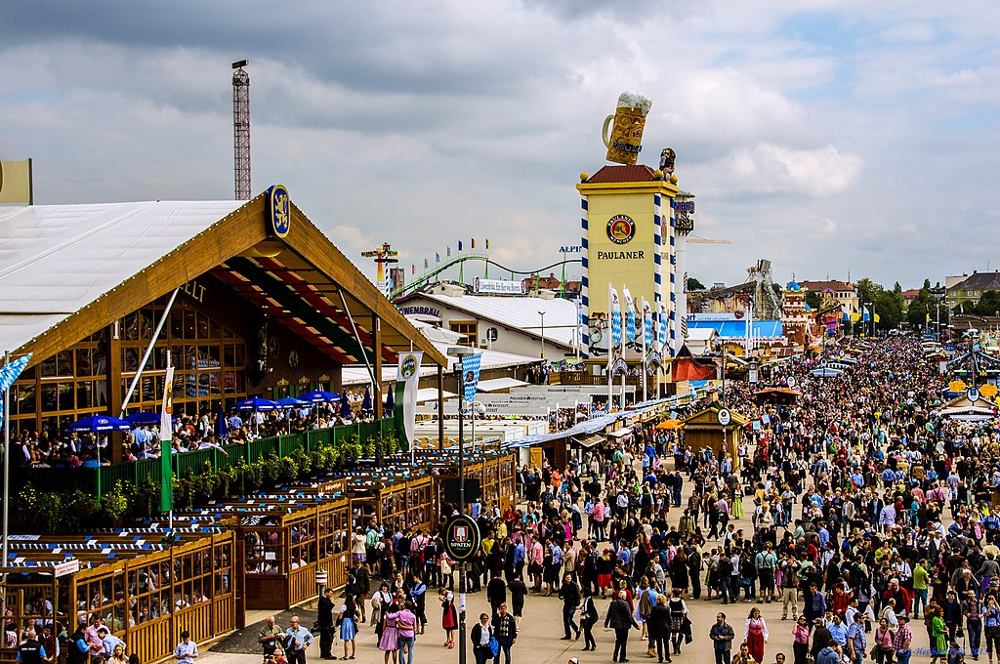

Oktoberfest este cel mai mare Volksfest (festival al berii și târg de distracții ambulant). Are loc anual la München, Bavaria, Germania. Este un festival popular de 16 până la 18 zile, care se desfășoară de la jumătatea sau sfârșitul lunii septembrie până în prima duminică din octombrie, cu peste șase milioane de oameni din întreaga lume participând la eveniment în fiecare an. Pe plan local, se numește d’Wiesn, după numele colocvial al târgului, Theresienwiese. Oktoberfest este o parte importantă a culturii bavareze, având loc încă din anul 1810.
Alte orașe din lume organizează, de asemenea, sărbători Oktoberfest care sunt modelate după evenimentul original de la München. În cadrul evenimentului se consumă cantități mari de Bere Oktoberfest. De exemplu, în timpul festivalului de 16 zile din 2013, au fost serviți 7,7 milioane de litri.
Vizitatorii se bucură, de asemenea, de numeroase atracții, cum ar fi plimbări de distracție, standuri laterale și jocuri. Există, de asemenea, o mare varietate de alimente tradiționale disponibile. Festivalul Oktoberfest de la München a avut loc inițial în perioada de 16 zile care a precedat prima duminică din octombrie.
În 1994, acest program de lungă durată a fost modificat ca răspuns la reunificarea Germaniei. Ca atare, dacă prima duminică din octombrie cade pe 1 sau 2, atunci festivalul se va desfășura până pe 3 octombrie (Ziua Unității Germane). Astfel, festivalul durează acum 17 zile când prima duminică este 2 octombrie și 18 zile când este 1 octombrie. În 2010, festivalul a durat până în prima zi de luni din octombrie (4 octombrie), pentru a marca bicentenarul evenimentului.
Muzică Oktoberfest
"Ein Prosit"- melodie tradițională germană cântată la Oktoberfest
Locații OktoberfestOktoberfest-ul nu este sărbătorit doar în München. Hanovra se laudă cu cel mai mare Oktoberfest din nordul Germaniei, iar în orașe precum Stuttgart, Bad Hersfeld, Eisleben sau Hildburghausen se organizează festivaluri de toamnă similare. Festivalul bavarez și-a extins popularitatea și pe alte continente. Există astfel la ora actuală festivaluri cu același nume în SUA, Canada, Brazilia, China, Australia, Thailanda, Romania.
Cel din SUA se sărbătorește în Cincinnati, Ohio, unde emigranții germani au jucat un rol decisiv în dezvoltarea economică a orașului încă din anii 1800. Primul festival a avut loc în anul 1976. În anul 1994 festivalul a fost vizitat chiar de prințul moștenitor al Bavariei și tot atunci a fost stabilit recordul pentru cel mai lung șir de dansatori în Chicken Dance, consemnat chiar și în Guinnes Book of Records. Festivalul atrage anual 500.000 de vizitatori iar organizatorii susțin că este cel mai mare Oktoberfest din America de Nord.
În Canada, festivalul are loc în localitatea Kitchener, Ontario, unde comunitatea de emigranți de origine germană au hotărât, în 1969, organizarea unui festival care să le amintească de casă. În timp, s-au adăugat note distincte, canadiene, precum parada organizată cu ocazia Thanksgiving-ului, care este, conform locuitorilor, cea mai mare din Canada. Tot conform acestora, Oktoberfest-ul din Kitchener este cel mai mare din America de Nord.
În Australia, Oktoberfest-ul are loc în localitatea Fairfield și atrage anual aproximativ 30.000 de vizitatori. Motto-ul festivalului este „Live and let live; eat and drink well” (trăiește și lasă și pe alții să o facă; mănâncă și bea bine).
În Romania cel mai popular festival este cel de la Brașov, dar s-au ținut în anumiți ani și la București și Timișoara.
Imagine Oktoberfest München 